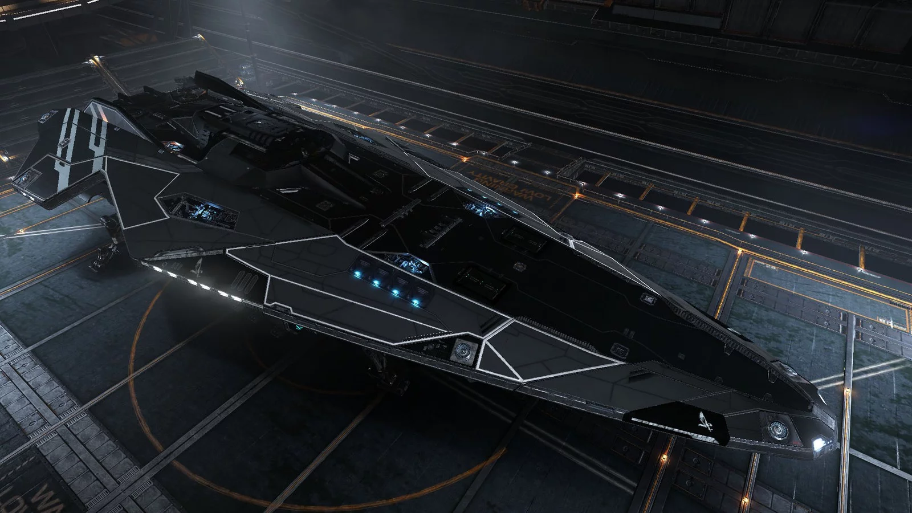
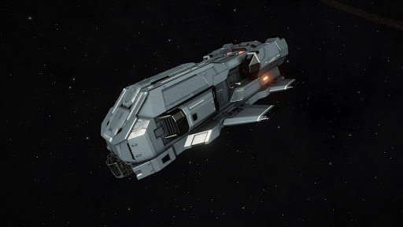
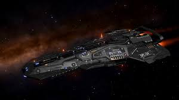
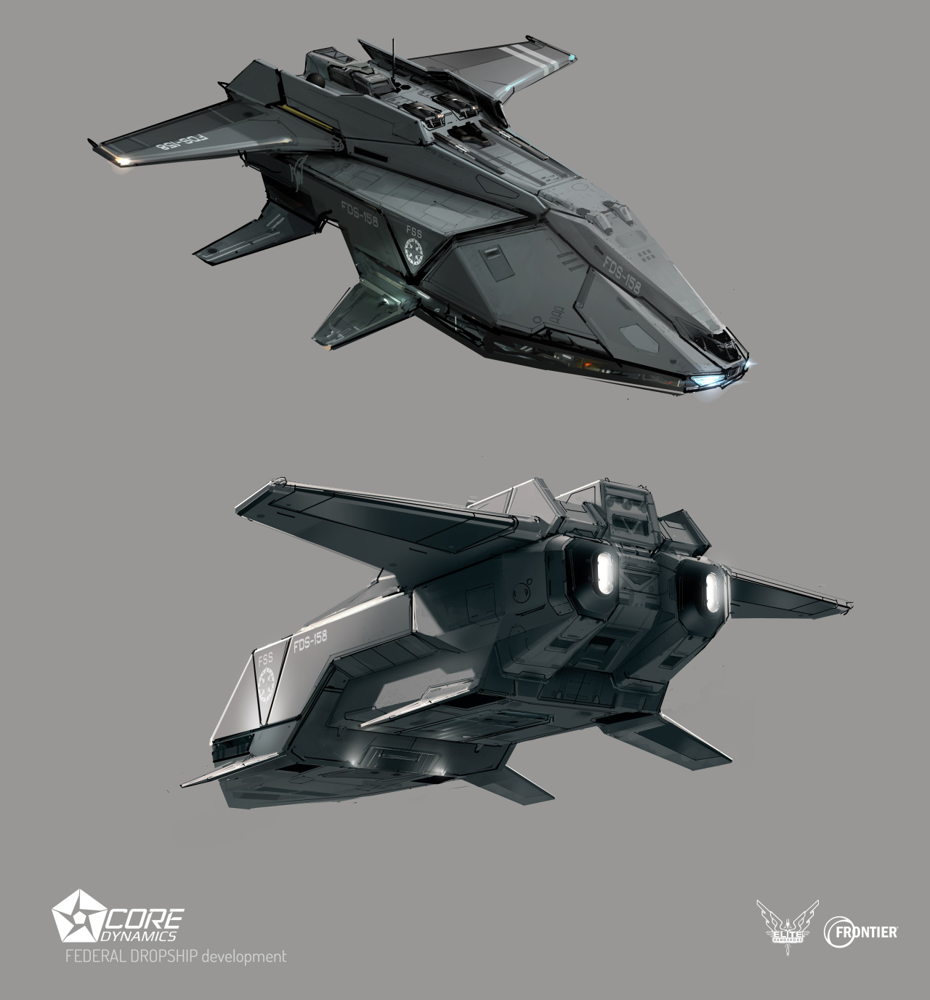
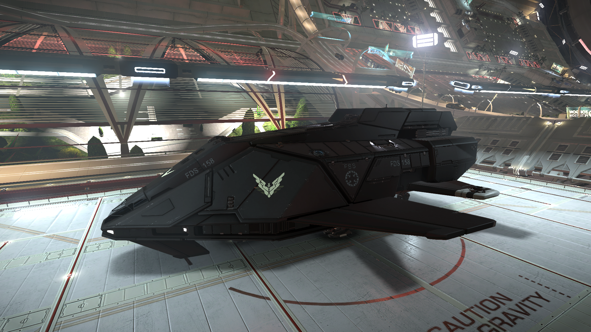
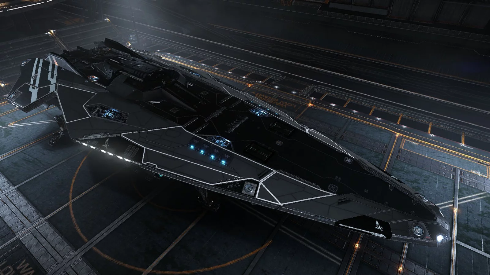
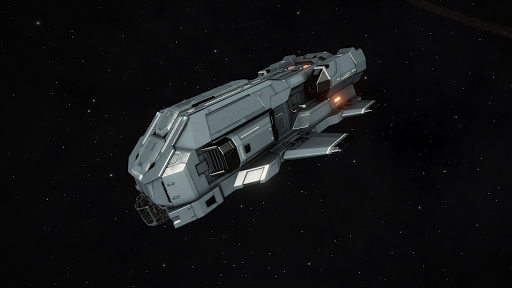
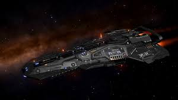
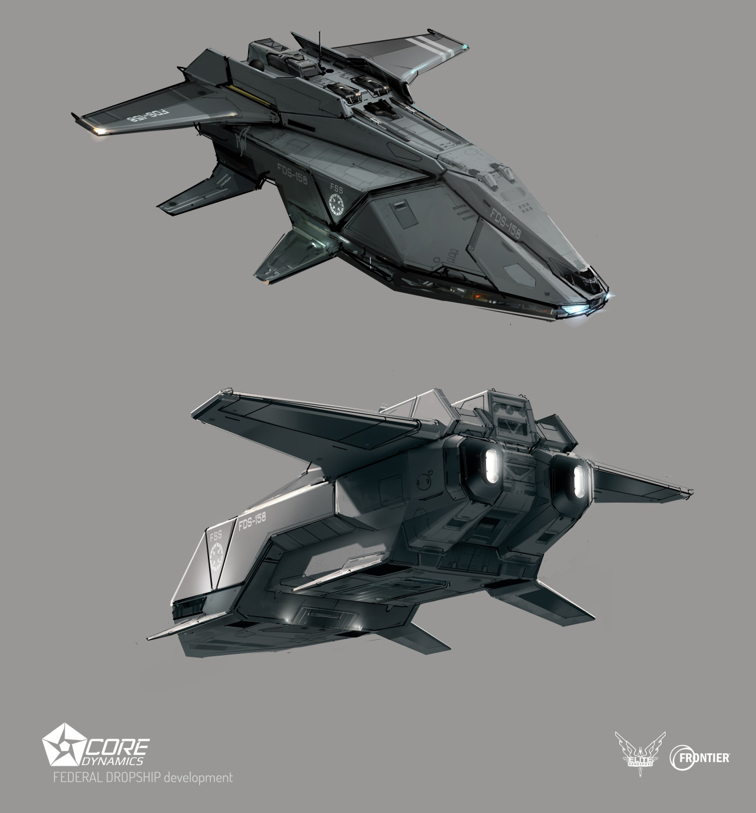
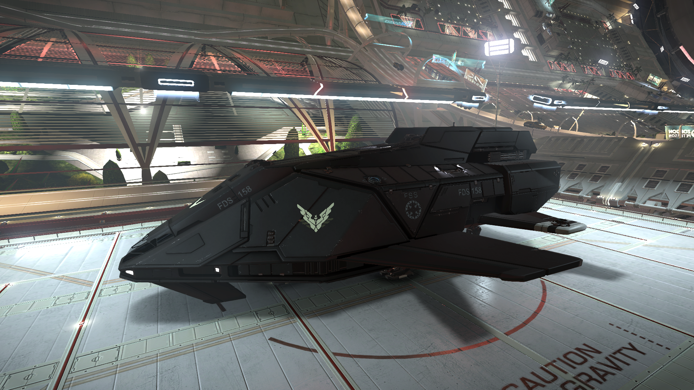

Multipurpose ships are a jack-of-all-trades in that they can easily be fitted for whatever role the player needs; whether it be hauling cargo, ship-to-ship combat, or exploring the stars, multipurpose ships can do it all. Multipurpose ships usually can do most jobs just as well if not better than comparable ships targeted towards those jobs. They, while considered multipurpose, sometimes lean into a more specialized role. The Imperial Courier, for example, is called multipurpose while ending up being a superb combat and exploration vessel, as it isn't very good at trading/mining.
Combat
Combat ships are usually faster, more agile and more heavily armed than other ships of the same size. The exception to this would be gun boats, which have more weapon mounts designed for turrets, but sacrifice their agility for them.
Freighter
Freighters are typically slow, cumbersome and lightly armed, but provide extreme hauling capabilities. Useful for traders and smugglers alike.
Explorer
Exploration ships typically come with large default jump ranges, large Fuel Tanks for ships of their size, and should be fitted with lots of low class Internal Compartments for scanners to optimize jump distance. These ships are designed to be able to equip the multitude of scanning equipment needed for an expedition, then fly long distances into the void without the need for regular refuelling through the use of Fuel Scoops.
Passenger
Couriers who fly passengers and valuable items with small storage requirements have a special class of ships available to them. These ships are elegant and fast, designed to quickly and comfortably get from one system to the next. You can think of them as giant space-limousines.
 








